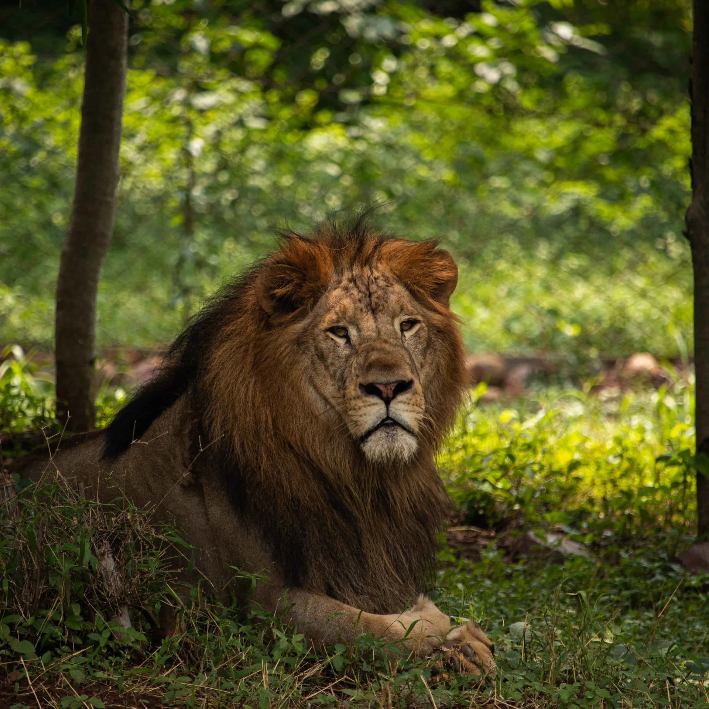
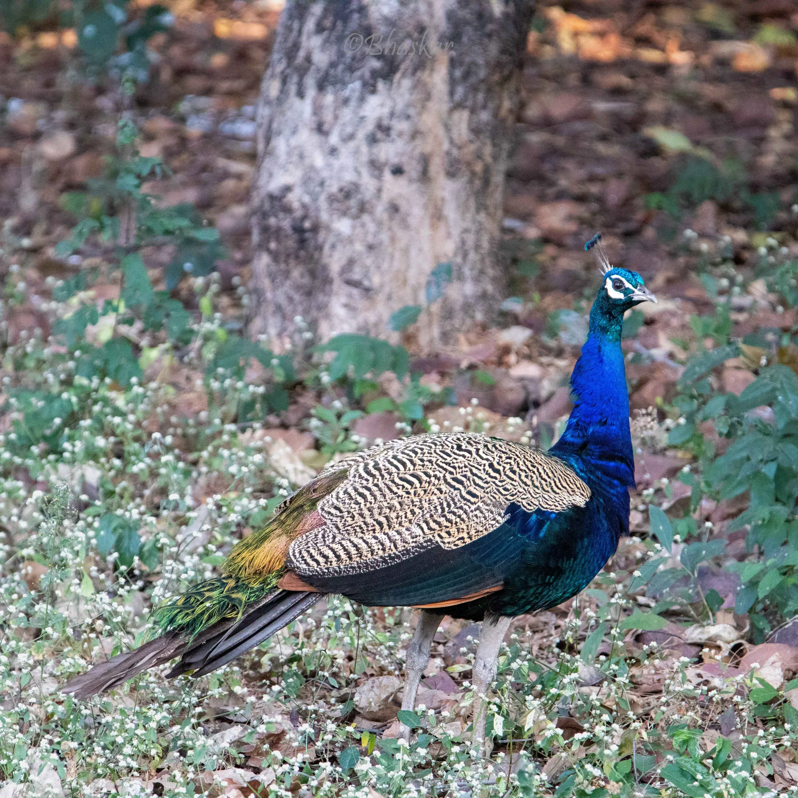
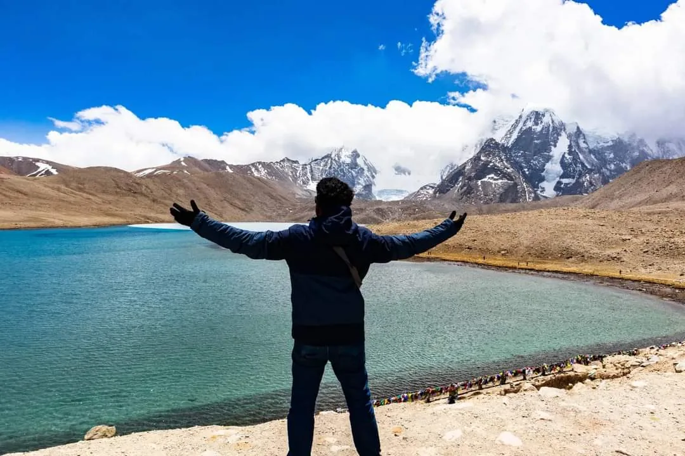
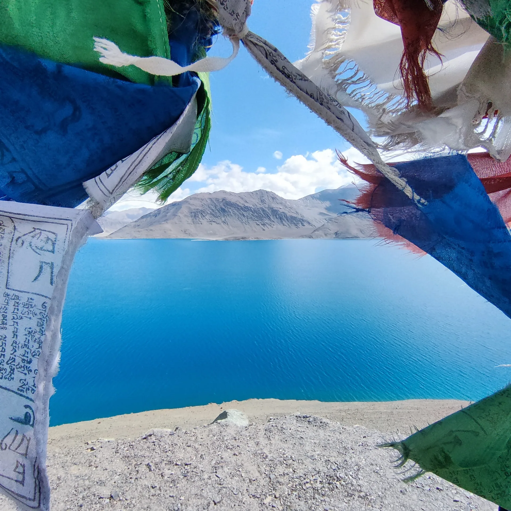

About Me
Academic journey, interests & life outside the lab
Academic Timeline
This is what I like about photographs. They're proof that once, even if just for a heartbeat, everything was perfect.
Photography




Other Interests
Travelling
Exploring new places, cultures, and landscapes.
Gurudongmar Lake (5,430 m / 17,800 ft), Sikkim · Khardung La (5,359 m / 17,582 ft), Ladakh.
Hiking
Trails and mountains wherever I find myself.
Tungnath (3,680 m / 12,073 ft), world's highest Shiva temple · Chandrashila Summit (4,000+ m / 13,123+ ft), Uttarakhand.
Reading
Personal finance, self-help, and philosophy. A mix of practical wisdom and big-picture thinking.
Anime
From political thrillers and philosophical dystopias to epic shonen — a long-standing habit that shows no signs of stopping.
Writing
Dispatches from the lab & beyond
Setting up a Substack for writing about research life, photography, and life. Check back soon.